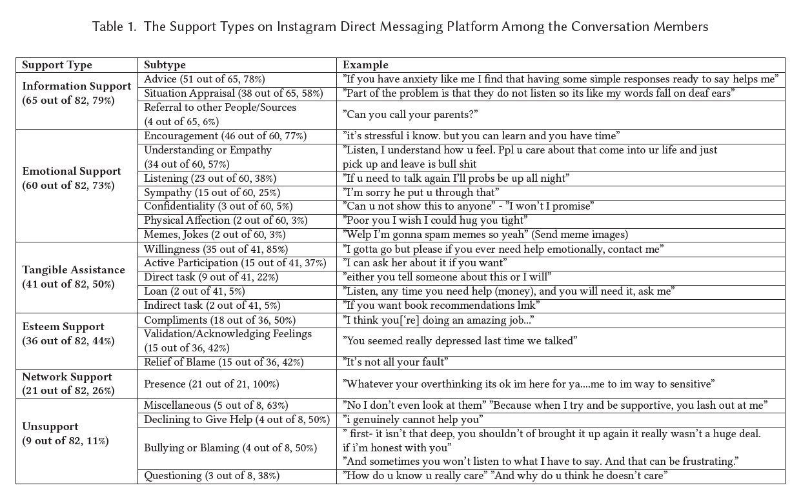
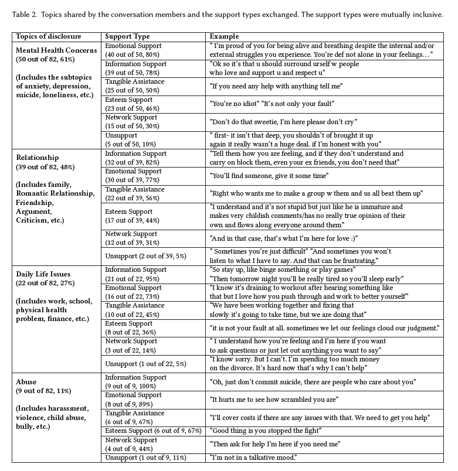
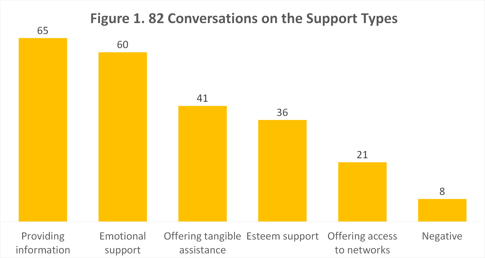
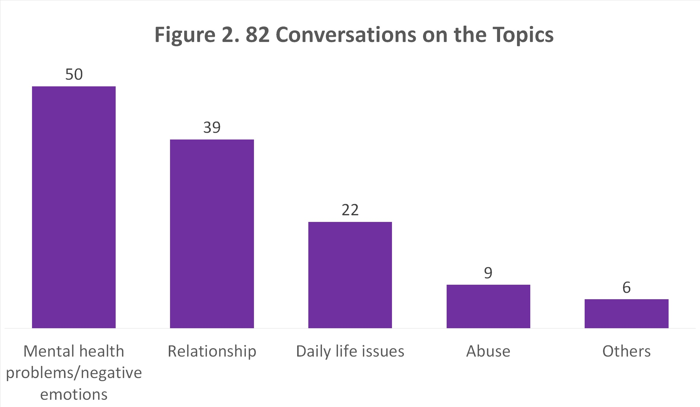

Peer Support Among Youth on Social Media
Human-Computer Interaction | UX Research
June - August 2022
The STAR (Students Tackling Advanced Research) Scholars Program marks some
of my memorable first-times: my first job and my first academic research. This program of
Pennoni Honors College, Drexel University, is an opportunity for first-year students to
engage in an early faculty-mentored undergraduate research over the summer. I was honored
to get accepted to the program and work on research in my area of interest.
I collaborated with two faculty professors to study what types of mental health problems are
prevalent among teenagers and how they support each other emotionally on Instagram Direct
Messaging. This research is the groundwork for a prototype design project I’m working on
(from September 2022 to the present).
1. Literature Review
I kicked off the project with secondary research - reading previous articles on the same research topic to gain insights into the problem we were studying. To be honest, I found it the most tedious part of the project, probably because academic reading didn’t draw me in and I have always preferred directly working with real data and information. However, I understood that literature review is still an indispensable step in the research and got along with the process. I reviewed around 10 papers and came to the conclusion that most of the mentoring programs for teens were in-person and provided by adults and professionals. Meanwhile, peer support occurring on social media, which is potentially an accessible support platform for youth, hadn’t been well studied.

2. Codebook Developing & Data Coding
In this project, we were authorized to utilize some resources from one of my mentors’ previous study: a codebook of support types and a dataset of over 500 Instagram conversations among teenagers (their identity and personal information was confidential). A secured web platform was set up for the access of the dataset. I went through each conversation and coded them based on the support type codebook in an Excel file: what kind of support the participants used, how they comforted each other specifically with words and actions. Working on the data, I developed a new codebook for the conversations’ topics, or the problems participants were dealing with. This is also one of the two research questions we were seeking answers for. Throughout the coding process, I noted down some interesting pieces of information that can give us more insights into the research results later on.
 3. Data Analysis
We used tables and charts to visualize our coded data, according to support types and subtypes, topics and subtopics. Besides, we analyzed the conversations based on categories such as: relevancy to the study, mutual support, whether mentees were happy and satisfied with the support, and so on. Having a mix of unarranged different charts and tables in hands, we faced a challenge as to how we could combine them into research results. This process was tiring at first as we were overwhelmed with information, but once we eliminated the insignificant numbers and focused on the main categories, we were amazed at the findings we got. As the main research assistant to work with the data throughout the project, I found it interesting to step into the participants’ world, get to know their problems and sympathize with them. This is the first time I can understand the users’ stories from their perspective, instead of a researcher or designer’s point of view.
 4. Afterwork
At the end of the summer, there was a summer showcase in which every STAR scholar had their poster hung up and presented about their research to the audience. I prepared a research poster for the on-campus fair and a video presentation for the virtual showcase. This is the time when I got a chance to reflect on what I had been doing over the summer, what I did well and what not. My mentors and I were also combining our research findings to write a paper for the ACM CHI conference - the premier international conference of Human-Computer Interaction. The paper has been submitted and we are waiting for the review. Although I wasn’t in charge of this process, it was a great opportunity for me to get involved in building an academic paper and understand how the process was going.
As a newbie researcher, I’m happy with what I have done throughout the program. I got to learn more about research, an important branch in my major of study, and become interested in it - which I have never considered the case as I’m more into the design track. Moreover, I’m excited to continue with this project after the STAR program as I’m designing a prototype for a digital platform that can improve teenagers’ experience with peer support.